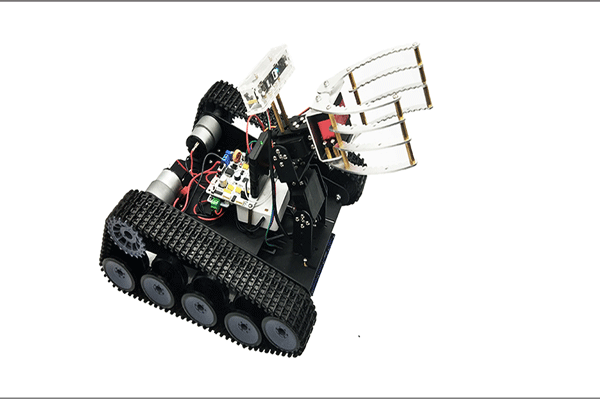

| NJIT209Robotics | |||||||
| 首 页 | 南京工程学院 | 软件开发 | 工程机器人 | 智能家居 | |||
|---|---|---|---|---|---|---|---|
|
软件开发是根据用户要
求建造出软件系统或者系 统中的软件部分的过程。 软件开发是一项包括需求 捕捉、需求分析、设计、 实现和测试的系统工程 |
软件开发
|
||||||
|  | 工 程 机 器 人 |
机器人是自动执行工作的机器装置。它既可以接受人类的指挥，又可以运行预先编排好的程序也可以根据人工智能技术制定的原则纲领行动。 |
|||||
|
智能家居
|
|||||||
| Copyright 2007-2017 NAO实验室 All rights reserved | |||||||